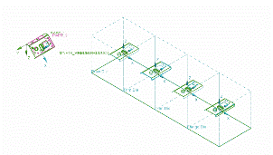
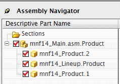
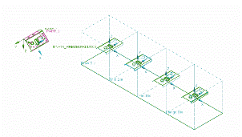
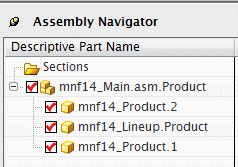

打开并检查装配
-
打开 mnf14_Main.asm.Product。

注意到已创建了一个工艺路线与四个操作。冲压定向的部件存在于每个操作中。两个产品部件显示在视图左侧附近。
-
在装配导航器
 中，注意到装配包含两个不同的产品部件与工艺路线。
中，注意到装配包含两个不同的产品部件与工艺路线。
打开 mnf14_Main.asm.Product。

注意到已创建了一个工艺路线与四个操作。冲压定向的部件存在于每个操作中。两个产品部件显示在视图左侧附近。
在装配导航器  中，注意到装配包含两个不同的产品部件与工艺路线。
中，注意到装配包含两个不同的产品部件与工艺路线。
